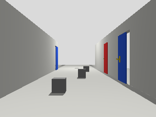
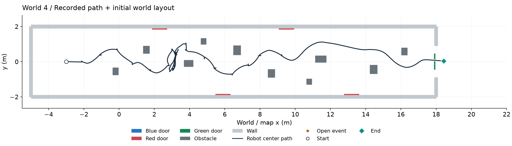
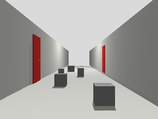
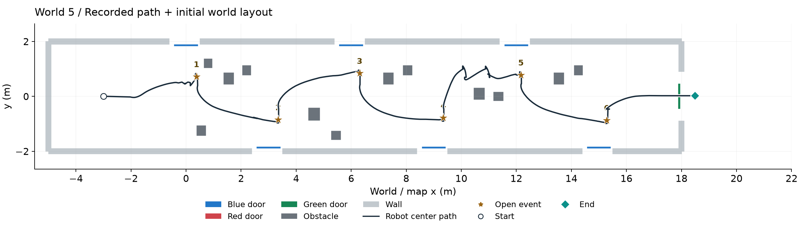
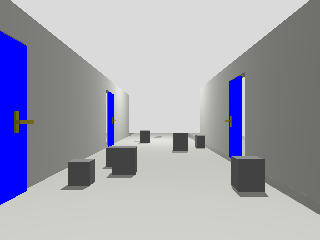
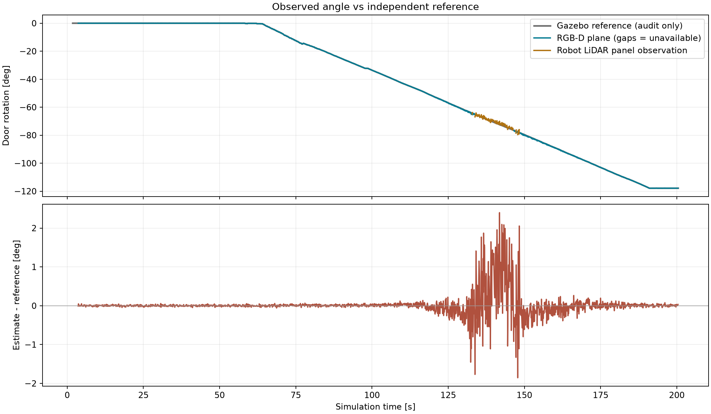

Asset finder / use full-resolution originals

W3_front World 3: 시작 정면 카메라
2026-09-16 / NAV_20260916
W4_combined World 4: 월드 배치 + 주행 궤적
2026-09-16 / NAV_20260916
W4_front World 4: 시작 정면 카메라
2026-09-16 / NAV_20260916
W5_combined World 5: 월드 배치 + 주행 궤적
2026-09-16 / NAV_20260916
W5_front World 5: 시작 정면 카메라
2026-09-16 / NAV_20260916
E2 관측 각도와 독립 평가 비교
2026-09-22 / R34_SINGLE_DOOR